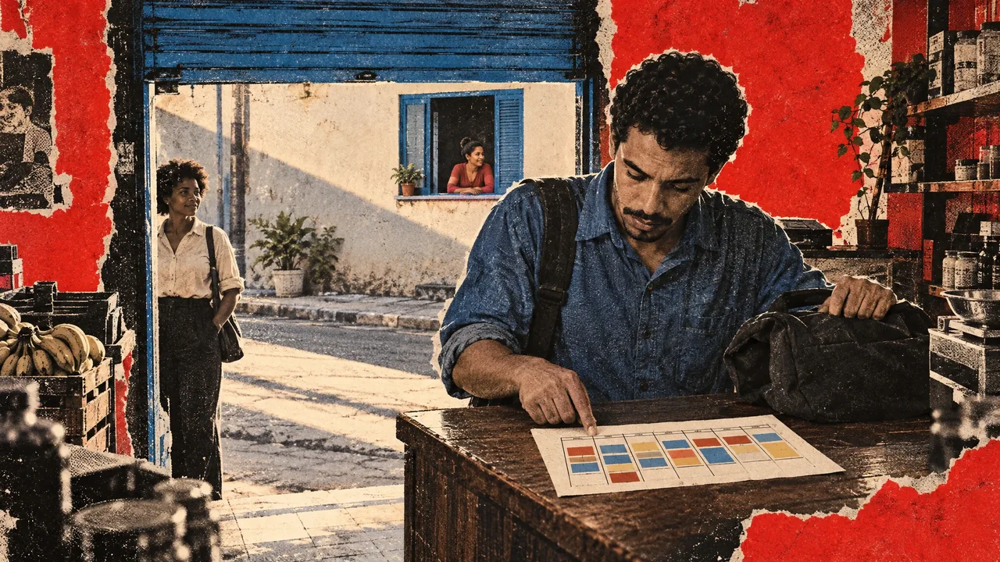

Trabalhar menos · Cena em áudio
Sábado, das oito às dez

André quer ver a filha jogar. Mariana pega a escala da loja e os dois tentam liberar a manhã de sábado.
1 min 05 s · Cena fictícia com duas vozes sintéticas brasileiras.Ler a conversa
Mariana — André, olha a escala de sábado. Você tinha me pedido essa manhã de folga, lembra?
André — Lembro. Vou conseguir levar minha filha no jogo? Ela vai entrar em quadra às nove. Dessa vez, eu queria estar lá antes de começar.
Mariana — Tô tentando. Das oito às dez, só tem você no balcão.
André — E se eu trocar com a pessoa que fecha a loja na sexta?
Mariana — Quem fecha na sexta sou eu.
André — Então me dá esse lápis. Se eu fecho pra você na sexta e você abre pra mim no sábado... pronto?
Mariana — Pra este sábado, pronto. Vai ver o jogo. Agora vira a folha. Imagina que a sua semana ficou duas horas mais curta. A loja continua abrindo às oito. Se você fizer essas duas horas na sexta, quanto tempo você ganhou?
André — Pra ir ao jogo? Uma manhã inteira. De descanso na semana? Peraí... nenhuma hora. Eu só mudei as horas de lugar.
Mariana — Pois é. E se eu abrir a loja às dez? Você vai ao jogo, eu descanso e a gente economiza esse turno.
André — Pode ser. Mas sabe quem passa aqui às oito? O pessoal que sai do plantão. Será que volta às dez?
Mariana — Vamos anotar isso. Antes de mexer no sábado de todo mundo, vamos descobrir quem usa essas duas horas.